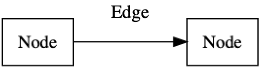
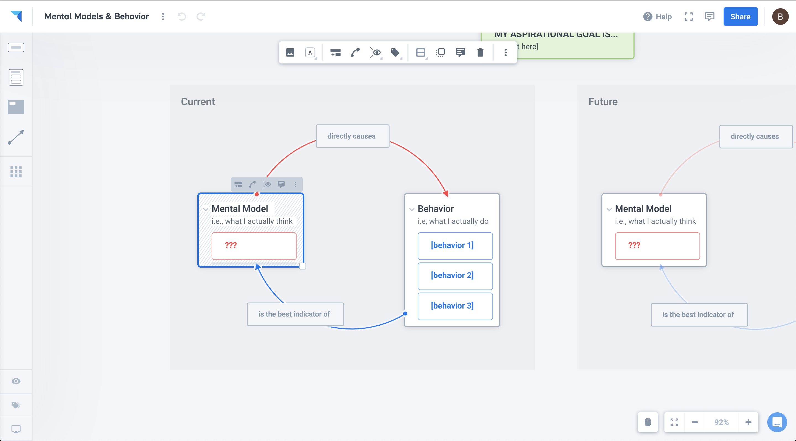
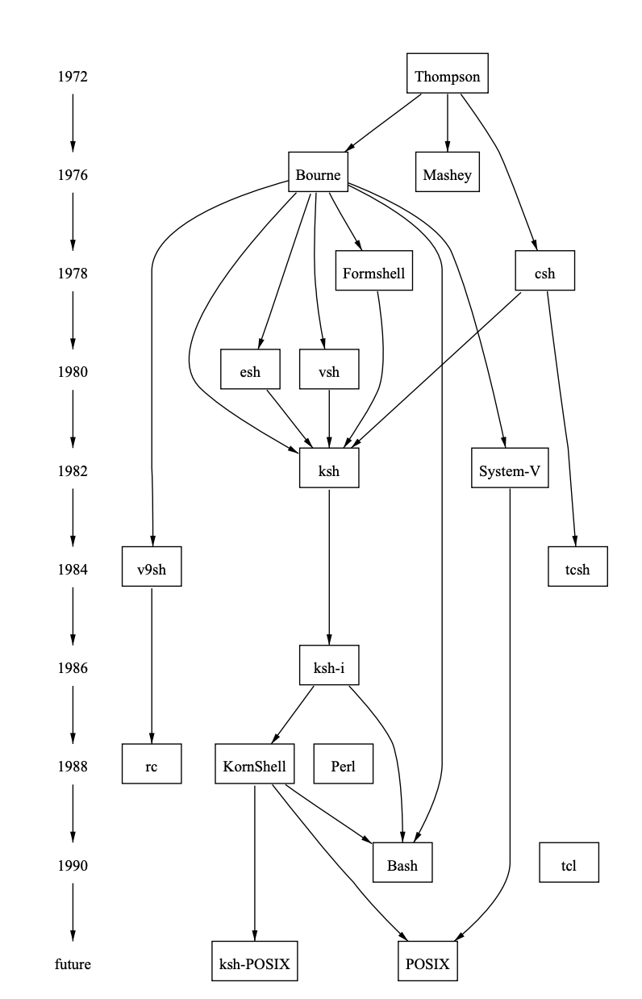
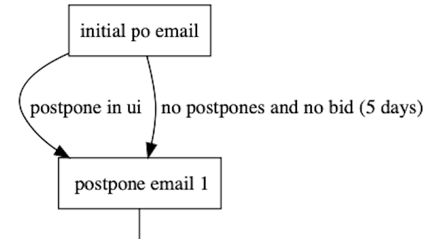
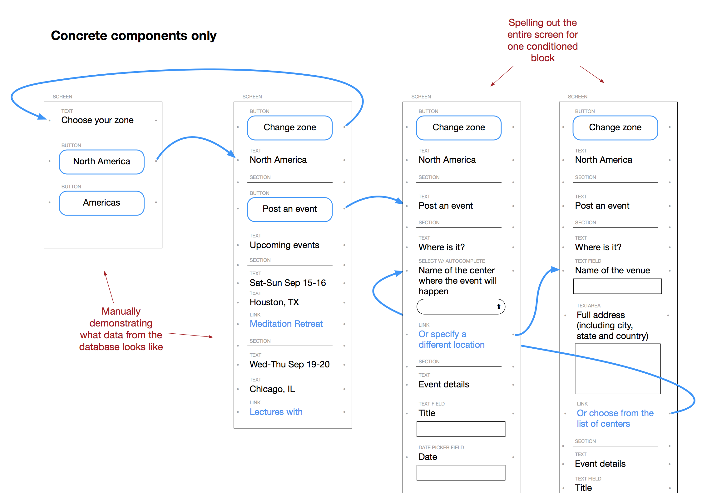
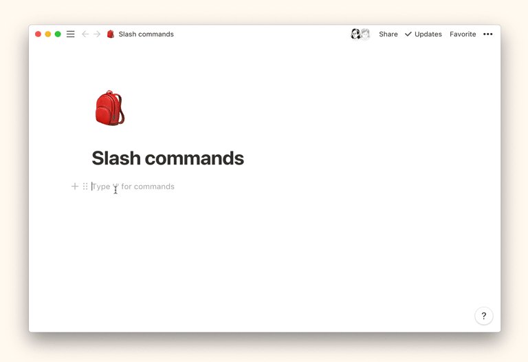

Recently I have been investigating how to improve flowchart editing tools. Flowcharts and graphs are a powerful tool for understanding complex non-linear systems but they can be difficult to manipulate on computers. There are a few good digital tools for editing flowcharts like OmniGraffle and Whimsical. But, I feel they could be improved by limiting the time spent on diagram layout and providing support for complex written content.
In this article I'll be using the Graph Theory terminology of nodes and edges to describe flowcharts. Nodes are the boxes in the flowchart and edges are the connecting lines.
Currently if I need a flowchart for something like a new software architecture or to decompose a large project into dependent subtasks I have a couple of options:
Whiteboards - I can draw it out on a Whiteboard. Whiteboards are by far the best interface for producing diagrams. They have infinite flexibility and instant feedback. The main downsides are pictures of whiteboards can't be updated, it can be tedious to organize large detailed diagrams, and it is difficult to use whiteboards remotely.
Flowchart Tools - There are many tools for editing flowcharts online like Whimsical, Plectica, OmniGraffle, and Lucidchart. I think Whimsical and Omnigraffle are well made and offer a large amount of flexibility. But, I spend too much time manually managing the chart layout. This is especially noticeable when diagrams are modified. Modifying a large diagram results in lots of shuffling. Adding or moving a node often makes the rest of the chart unpresentable. The user is then forced to re-organize all of the connecting edges. Additionally, typing long sections of text often cause nodes to overlap. This forces the user to switch from writing to move nodes back into a presentable layout.
Below is an example of me trying to switch a horizontal flowchart to a vertical layout in Whimsical. As I re-organize the chart is becomes a jumbled mess of connecting edges.
All of the existing chart editing tools force the user to manipulate the document at the pixel level. You need to specify where edges connect to a node, how the edges are laid out and the exact pixel position of the nodes. If anything changes the user is responsible for fixing the layout.
Another issue is flowchart tools seem to be oriented around writing a few lines per node. I would like to express complex information like a software system specification inside a node. Putting complex written ideas inside a node requires things like headers, checklists, images, tables, and embedded content (Github, Figma, etc.).
I do want top give a shoutout to Plectica. Their layout model allows you to specify high level relationships like "this node is connected to that node", without forcing you to specify exactly where the edge connects to the node. My main gripes with their tools are the interface is not good for high efficiency editing, and the line drawing algorithm is a little wonky.
Graphviz - Graphviz is a command line tool for visualizing graphs. The user only needs to specify the nodes and edges of the graph and the program will try to lay it out in a presentable manner. Graphviz is really great but it has a high are lots of configuration options to understand, and if the graph does't look right it's difficult to figure out how to fix it. Often you are forced to use hacks to get the graph to look presentable. Also, there is not an easy way to share Graphviz programs. Given all of those difficulties it can still be used in a business context. Here is an example of project management using Graphviz.
None of the current options provide a satisfactory experience. I would like to have a chart drawing tool that lets me focus on the content and relationships of the chart. I don't want to spend a lot of time tweaking the chart layout. Additionally I want to be able to express complex information inside the chart nodes. Essentially I want a tool that has the editing capabilities of Notion and the layout features of Graphviz. Below are some ideas to decrease the amount of time it takes to create and modify an aesthetically pleasing flowchart. In the following section I will describe a hypothetical tool named Tidy. To flesh out the concepts there are a few illustrative videos from a prototype I made.
The primary difference of Tidy and current flowchart tools is the user has less control over the layout. The chart edges must always connect to a node or a piece of content and the user has no control over how the edges are laid out. Where the edge connects and how the edge is laid out is done automatically. Nodes cannot overlap. Here is an example of the edge repositioning itself as the node moves:
Similar to Graphviz, the edges try to lay themselves out in the most aesthetically pleasing position possible. For example edges will never overlap nodes. The layout algorithm would likely follow similar aesthetic criteria to the Graphviz Dot Algorithm.
A1. Expose hierarchical structure in the graph. In particular, aim edges in the same general direction if possible. This aids finding directed paths and highlights source and sink nodes.
A2. Avoid visual anomalies that do not convey information about the underlying graph. For example, avoid edge crossings and sharp bends.
A3. Keep edges short. This makes it easier to find related nodes and contributes to A2. A4. Favor symmetry and balance. This aesthetic has a secondary role in a few places in our algorithm - Aesthetic criteria from A Technique for Drawing Directed Graphs
I'm still not sure if it is possible to always layout the edges in such a way that the user doesn't get annoyed. The user may need to be given high level controls to manipulate the edges. Here is an example of what it might look like to have edges move out of the way when they overlap with a node.
Nodes are not allowed to overlap with each other. Dropping a node on another node or overlapping a node via typing causes the other node to move.
Edges need to be able to have labels similar to Graphviz.
Tidy would provide the ability to auto-layout a chart. There are many kinds of graph layout methods . The most useful seems to be the hierarchical layout used by the Dot algorithm. When a chart item is selected, Tidy could display buttons to auto-layout the selected chart. The user could choose from multiple layout styles. Here is an example of the user laying out the graph in a vertical hierarchical layout.
I believe that by automating much of the tedious layout upkeep the user can spend more time focusing on the problem they are trying to solve. Also, auto-layout opens up many design possibilities like modifying a chart via api or quickly building out a chart with keyboard shortcuts.
The existing flowchart tools have total flexibility of canvas layout but dramatically limit the format of content inside nodes. Flowcharts have the opportunity to contain more complex written content. There are 2 use cases I'm interested in supporting.
First, Ryan Singer has a prototyping methodology called UI Breadboarding. Essentially, it involves expressing an interface in terms of "its affordances and connections between them". It allows you to prototype the users capabilities without being bogged down by how things will be arranged spatially. Ryan writes "It boils down to some simple rules, like forcing all elements into a single column, and including important pieces of text alongside the functional components like buttons and fields". Below is an example mockup from Ryan's Article. There is a more extensive writeup of the methodology in the book Shape Up.
You could create this diagram in existing flowchart tools (I suspect he made the above diagram in OmniGraffle) but the existing tools do not make it easy. For example if you wanted to insert a new item you would have to manually resize the containing box and move all of the items below. Doing this might also cause the arrows to become mis-aligned.
The second use case I would like to support is software system specification. Graphs are a powerful way to think about software systems. Gary Bernhard has a great article about the importance of mental graphs in programming. Here he highlights the relationship between graphs and programming systems:
Graph relationships exist at all levels of scale, from the data dependencies between expressions in a function up to the dependencies between publicly published packages. This is good news for us: learning about one aspect of software structure reinforces our ability to think about others. It also means that all programmers eventually learn to think about graph relationships, even if that skill remains entirely automatic and subconscious. Programming requires understanding which functions call which other functions, which modules import which other modules, and which classes inherit from which other classes. Getting better at programming means, in part, getting better at thinking through more of those relationships without jumping to the functions and modules, examining them one by one.
- From Software Structure for Anyone Who Knows a Programming Language
When I design a new system I usually use pencil and paper to trace out some of these graph relationships. When I document the system I usually write it up into a wiki like Notion. It would be interesting to see if system specifications could be better expressed through graph relationships with big chunky long form nodes. Current tools don't support this very well because they don't allow for complex formatting like headers or embedded code snippets.
In order to support these of use cases I think it would be useful for Tidy to have something similar to Notion's blocks. In Notion a block is an atomic unit of content. It can be a paragraph, checkbox, code snippet and many other things. They have a good writeup on blocks here.
What is so neat about blocks is even though they contain different kinds of content they share the same affordances. All blocks can be reordered, transformed into other blocks, linked to, commented on, etc. The uniformity of affordances make blocks a powerful primitive.
I would like Tidy to support some form of "block based editing". Organizing content in terms of blocks opens up many opportunities such as allowing edges to point to specific blocks. To support rapid prototyping, slash commands could be used to insert common UI element images like form inputs.
Some aspects of Notion's blocks would need to be modified because flowchart editing is different from document editing. The main difference is there are two layouts. The block layout inside a node and the canvas layout outside a node.
A big design challenge with introducing blocks is how to handle theses two layouts. The user needs to be able to drag the node and the blocks inside the node. The flowchart tool Plectica allows for nested nodes and handles the nested dragging via padding around the nodes. In practice, I found it hard to select the text areas with the mouse and it created a lot of visual clutter.
Another open design question is should blocks be different from nodes? Can nodes be nested inside other nodes? In Notion everything is a block and that provides a powerful conceptual uniformity. But, nesting many nodes inside each other may make the layout difficult to manage for the user.
I'm not sure how or if Notion's blocks should be integrated into flowchart editing but it seems like a promising avenue to explore.
I want Tidy's style controls to be limited. The user should have enough room to make their ideas legible without cluttering the interface. Tools like Whimsical and Notion do a good job with this. Whimsical has an interesting article on the design of their contextual toolbars . Tidy would ideally have a similar level of style customization.
Notion and Whimsical's control panels.
In the interest of creating and modifying charts as efficiently as possible a tool like this needs to maintain incredibly high performance. Low latency in creative tools is incredibly important . Many existing chart drawing tools tools do not have satisfactory performance. A production version of Tidy would need to be a native app or leverage web assembly similar to Figma. Kevin Lynagh prototyped a promising architecture that uses Electron for the UI and Rust for most of the computation. Something like that would be nice because you could leverage the browsers rendering capabilities while maintaining high performance.
In addition to the application being fast the user needs to be fast. Because I envision Tidy would primarily be used via laptop I want it to support mouse free editing as much as possible. It would likely need keyboard shortcuts for directionally creating new nodes (ex: command + right key to make a new node to the right) and directionally navigating nodes. Directionally navigating nodes can be difficult because nodes can be places 360 degrees around each other. I'm not sure how to solve this at the moment.
Tidy needs to be symbiotic with other tools. A chart is usually part of a broader piece of knowledge. You may want to embed a chart inside a document, slack message or presentation. Ideally these embedded diagrams would be Iframes that can be manipulated. Embedded editing is especially useful inside document editors like Notion or Paper.
By letting the computer do some of the tedious layout and allowing more expressive nodes, I think flowchart editing on computers could be dramatically improved. There are many technical and design challenges involved in the suggestions above but it seems like it seems possible. In the short term I plan to give this topic a rest. But, if you have any suggestions or comments feel free to reach out at zindlerb@gmail.com.
These projects are not directly related to flowcharts but they exist in the same space of "tools to understand complex systems".
Sketch Systems is a DSL for describing the state space of systems. There is an automatically generated visualization of the nested states in the app. Unlike Tidy, Sketch Systems is text based.
Ink & Switch have produced interesting writeups on creating a tablet based tool for creative work. Their focus is on more freeform work but they have a lot of really interesting ideas. They recently spun off Muse into its own product. I'm excited to use it when it comes out!